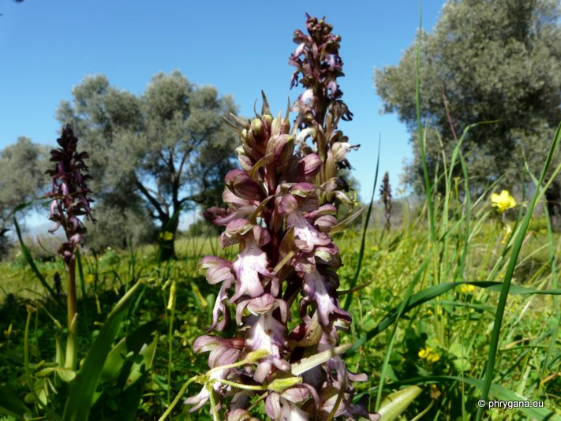
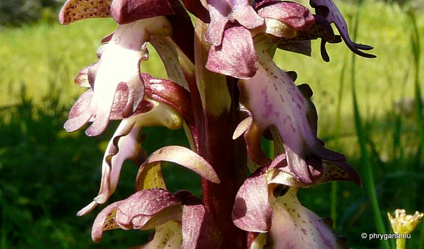
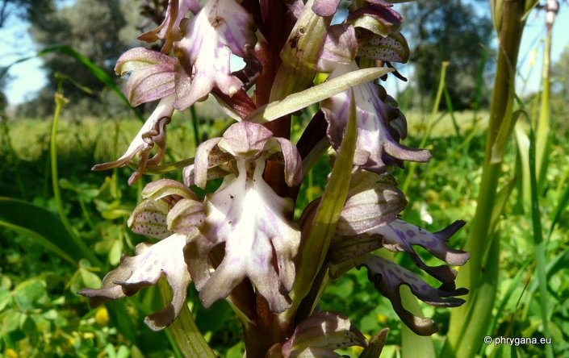
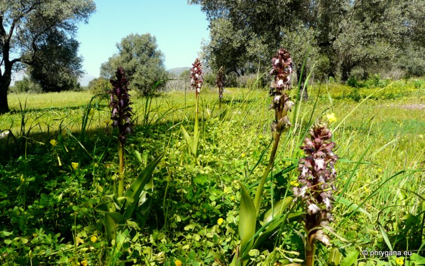

| PHRYGANA | Fauna | Flora | Galles | liste des espèces |
contact -
info - commentaires phrygana1 (at) gmail.com |
| Particularités crétoises | nouveautés | Mines | ressources naturelles |
| Himantoglossum robertianum (LOISEL.) P. DELFORGE |
| 379 | Flora | ORCHIDACEAE | Himantoglossum SPRENG. |
|
 Himantoglossum robertianum Lagolio 02 mars 2010 |
| syn.: Barlia robertiana (Loisel.) Greuter, Orchis robertiana Loisel. | |
| la Barlie de Robert, l'Orchis géant -- Giant Orchid | |
| Plante robuste; tige épaisse, lavée de violet au sommet | |
| Feuilles: 5 à 10 feuilles charnues, vert brillant; feuilles inférieures ovales-oblongues, subdressées en rosette basale; feuilles médianes engainantes | |
| Fleurs: bractées foliacées teintées de violet; inflorescence (6 - 25-35 cm), avec 15 - 60 fleurs; sépales et pétales connivents en casque; couleur violet rosâtre, verdâtre ou rougeâtre, ponctué de pourpre en dedans; labelle trilobé allongé (13 - 22 mm), étranglé à la base | |
| Hauteur: 25 - 70 (-110) cm | Type biologique: géophyte rhizomateux |
| Floraison: janvier février mars avril | |
| Altitudes: 0 - 1450 m | |
| Statut en Crète: indigène | |
| Biotopes en Crète: champs abandonnées, vieilles olivaies, terraces anciennement cultivées, pelouses, phrugana | |
| Distribution: région Méditerranéenne sauf Proche-Orient | |
| Note: parfum d'Iris | |
|
 Himantoglossum robertianum Lagolio 02 mars 2010 |
|
 Himantoglossum robertianum Lagolio 02 mars 2010 |
|
 Himantoglossum robertianum Lagolio 02 mars 2010 |
| 02 juillet 2012 |
| © paul fontaine -- © Phrygana.eu 2007 -- 2013 |